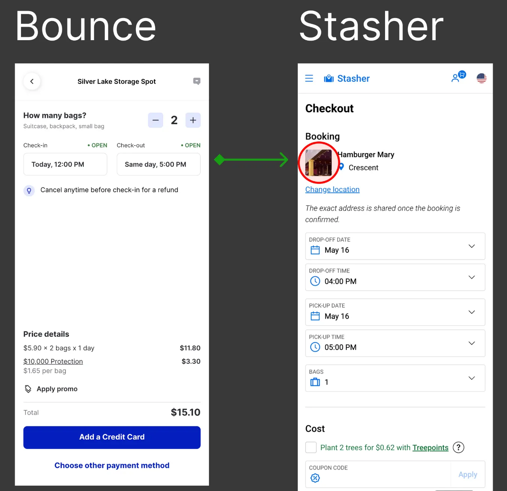
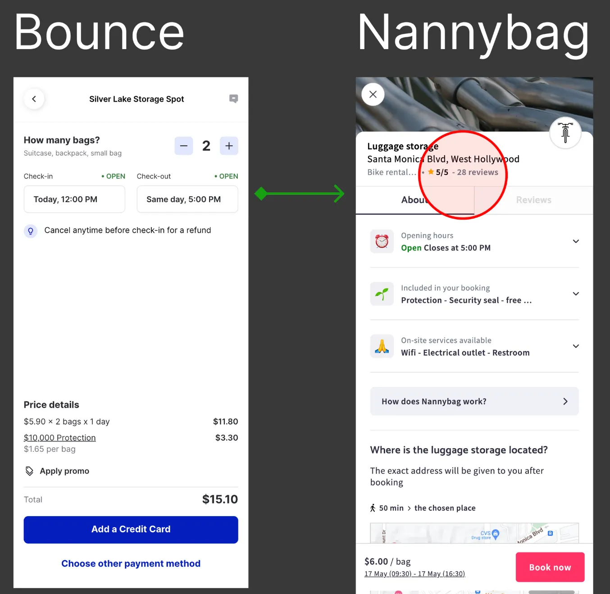
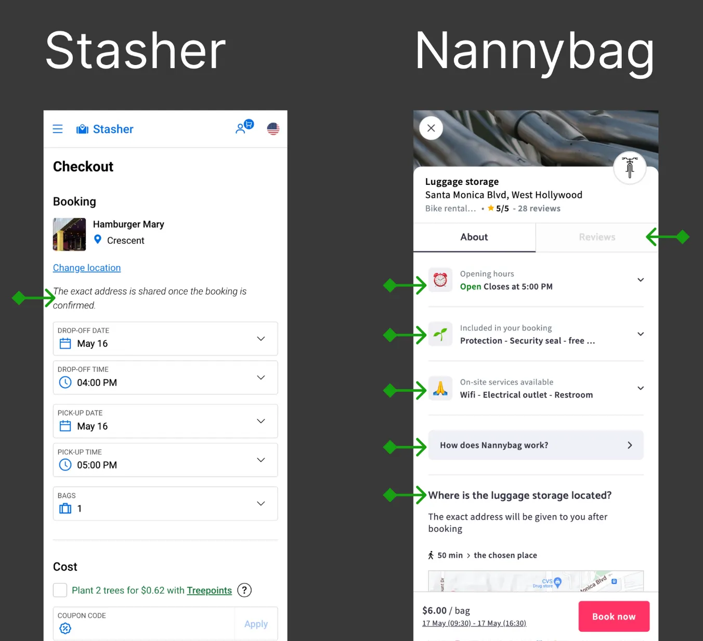
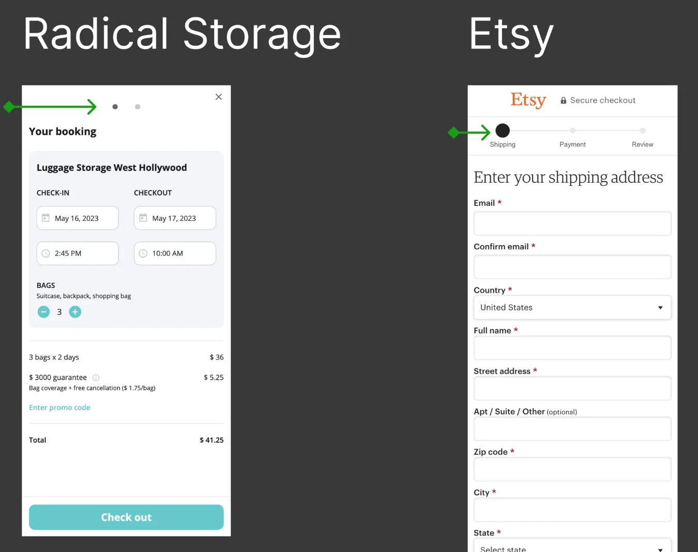
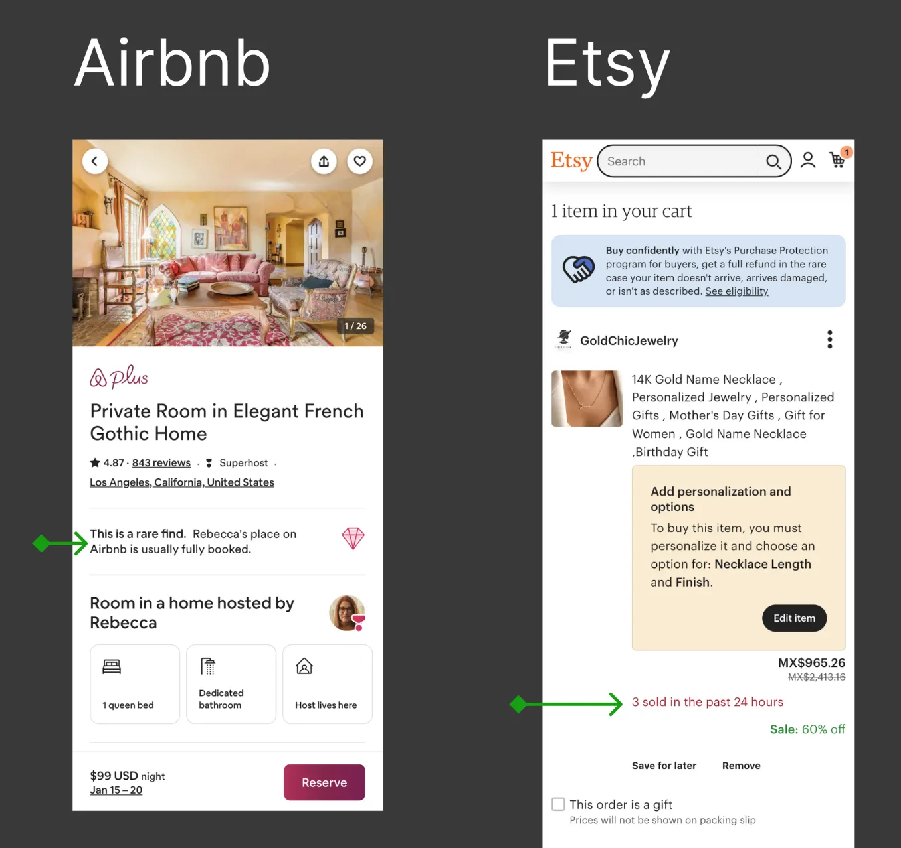
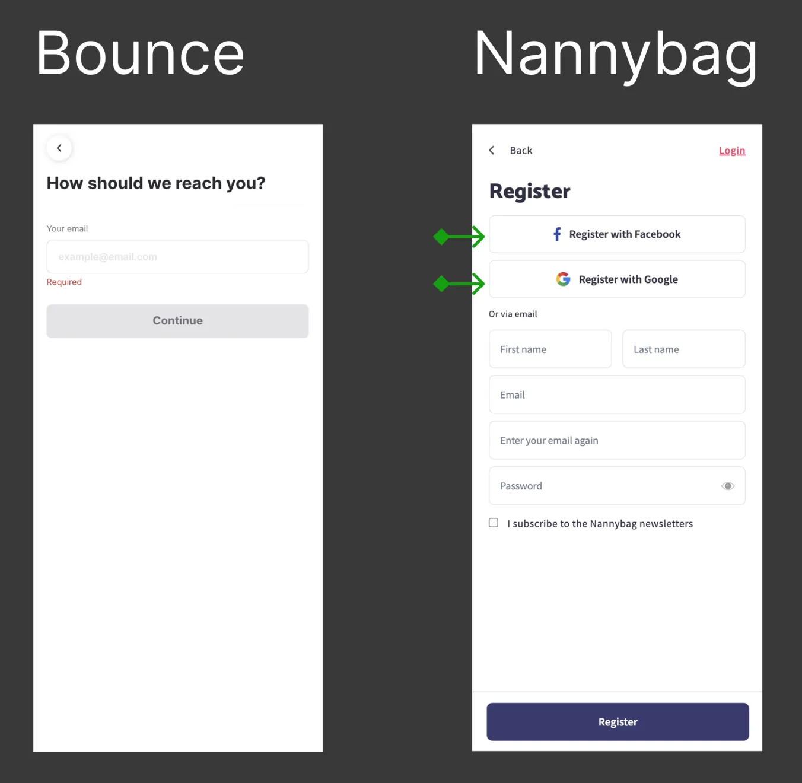
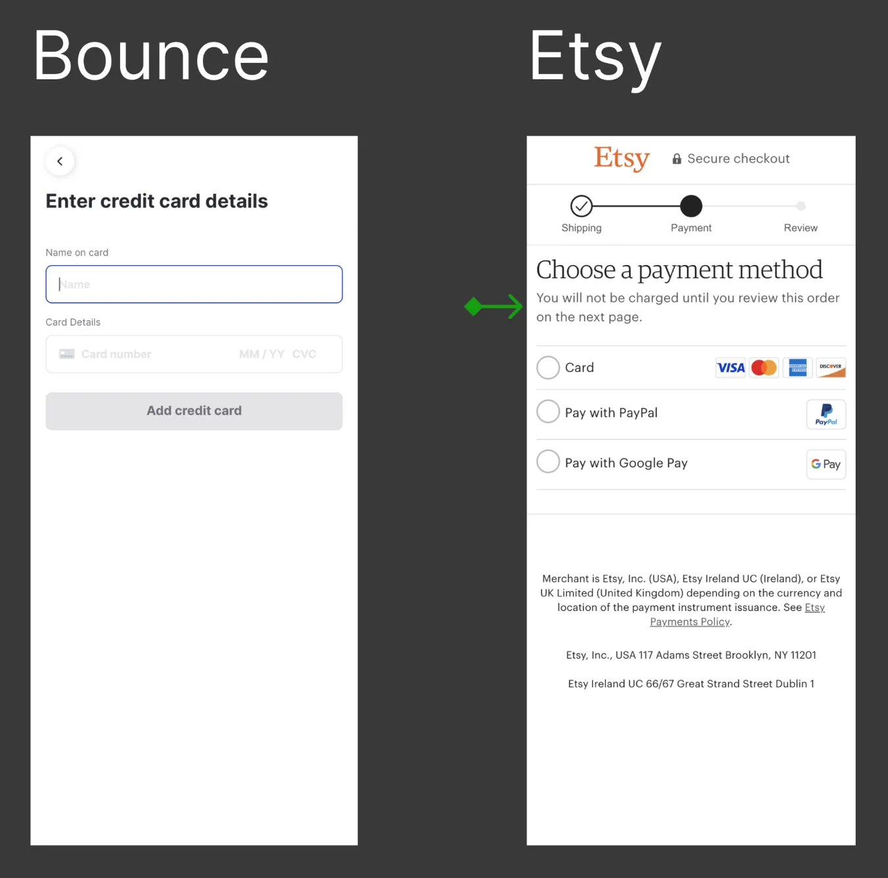
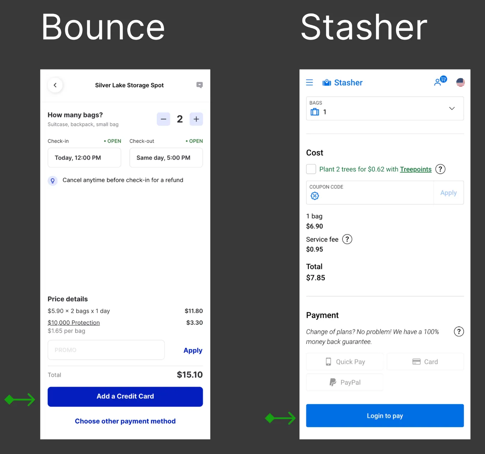

The Challenge
Bounce is a luggage storage service that allows travelers to leave their belongings in safe locations while exploring a city before check-in or after checkout.
The payment flow is one of the most critical steps in the user journey — it's where conversion actually happens. However, the existing flow had friction points that were causing users to drop off before completing their booking.
The opportunity: Identify and remove friction in the payment flow to increase conversion rates and revenue.
My Role & Approach
As Product Designer, I conducted a focused audit of the payment flow to identify friction points and opportunities for improvement.
- Lightweight & fast: A focused audit, not a full redesign.
- Data-informed: Prioritize changes based on impact vs. effort.
- Actionable: Deliver recommendations that could be implemented quickly.
Discovery & Audit
I audited the entire payment flow and identified 8 areas of opportunity.
1. Keep visual reference of the selected spot
The problem: When users entered the payment flow, they lost visual reference of the spot they had selected. This increased cognitive load and uncertainty.
The solution: Keep the spot's preview photo visible throughout the payment flow so users can confirm they selected the correct location.

2. Keep social proof visible
The problem: Reassurance is a critical strategy that enhances conversions in experiences like this one. Users need to feel they're making the right decision.
The solution: Keep social proof elements (reviews, ratings, number of bookings) top and center to help users confirm they are in good hands.

3. Keep key information accessible
The problem: Users were losing access to important information about the spot when they entered the payment flow.
The solution: Keep the following information visible and accessible:
- Spot address (even if not fully exposed)
- Security badge and message
- Amenities (if any)
- How the service works
- Reviews (can be under a hidden format but still available)

4. Add illusion of progress
The problem: Users didn't know how many steps were ahead of them, which created uncertainty and friction.
The solution: By giving the illusion of progress, the steps feel quicker. An experience that saves time is often rated better.

5. Add scarcity elements as a nudge
The problem: Users lacked urgency to complete the booking.
The solution: People tend to mimic the actions of others and want more of what they can't have. Adding scarcity elements (e.g., "only 2 spots left") increases users' intent to book.

6. Add third-party login options
The problem: Users were being asked to create an account or log in, which added friction to the payment flow.
The solution: Typically, users are already logged in to an account on their device. Adding third-party login options (Google, Facebook) can significantly reduce barriers.

7. Add supporting copy to H1 as trust signals
The problem: The H1 heading lacked context, which made the experience feel less reliable.
The solution: A common pattern among competitors is using supporting copy for the H1. This brief text provides more context and makes the experience more trustworthy.

8. Fix misaligned user expectations — THE WINNING CHANGE
The problem: When users clicked the button "Add a credit card", they expected to land on a page to enter their payment details. Instead, they landed on a sign-up page.
Why this mattered: This created frustration and cognitive friction. Users were expecting one thing and got another — a classic "expectation violation" that increases drop-off.
The solution: Change the button copy from "Add a credit card" to something that sets the right expectation — such as "Continue to payment" or "Book now" — and ensure the next screen matches that expectation.
Why this was high-impact:
- Low effort: A simple copy change.
- High impact: It directly addresses a moment of high friction in the conversion flow.

Prioritization
While all 8 opportunities were valid, I prioritized based on impact vs. effort. The most critical issue was the misalignment between user expectations and what they actually saw.
I prefer to present low-scope / high-impact proposals first. However, for the purpose of this audit, I went in the opposite direction to keep you engaged until the end — starting with the smaller opportunities and saving the biggest impact for last.
Results
The copy change resulted in a +8% increase in conversion — a clear signal that even small changes can have outsized impact when they address a critical friction point.
Business implication: In a transaction-based business like Bounce, an 8% lift in conversion translates directly to increased revenue. The change required minimal engineering effort and delivered immediate results.
Other Improvements Implemented
While the copy change was the most impactful, the other recommendations also contributed to a more cohesive and trustworthy payment experience:
- Visual reference of the spot — reducing cognitive load.
- Social proof — keeping reviews and ratings visible throughout the flow.
- Scarcity elements — adding "limited availability" nudges to increase urgency.
Key Learnings
- Expectation alignment is critical. Users need to feel that the product is predictable and reliable. When expectations are violated, trust erodes and conversion drops.
- Small changes can have big impact. An 8% lift came from a simple copy change — not a full redesign.
- Focus on moments of high friction. The payment flow is where users commit. Reducing friction here has a direct impact on revenue.
- Audit first, redesign later. A lightweight audit can quickly identify high-impact, low-effort opportunities.